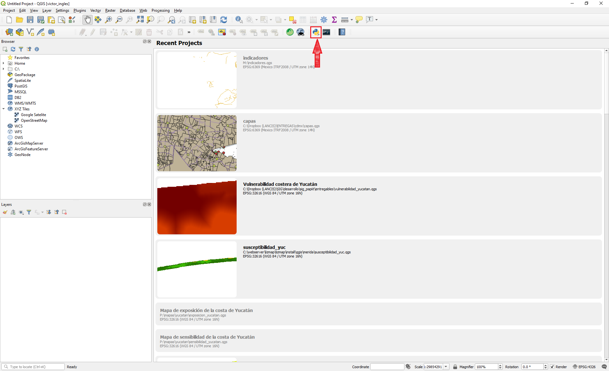
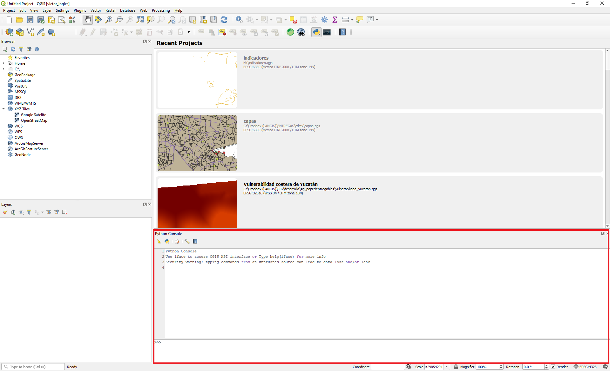
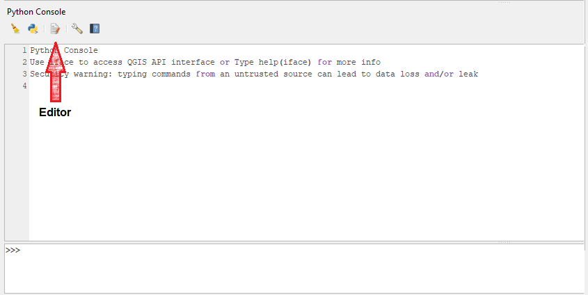
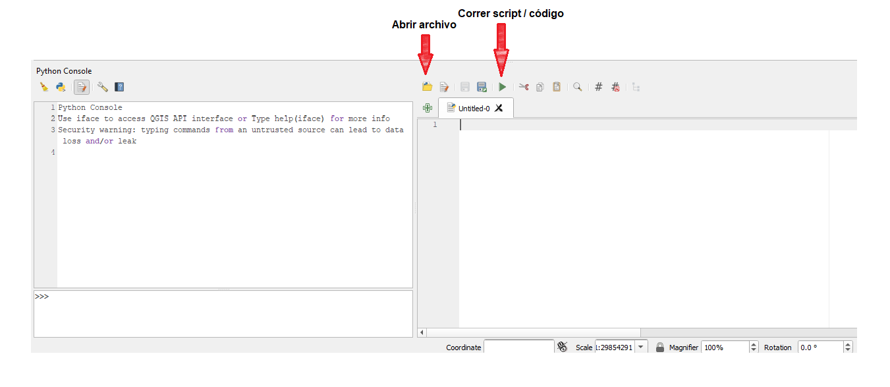
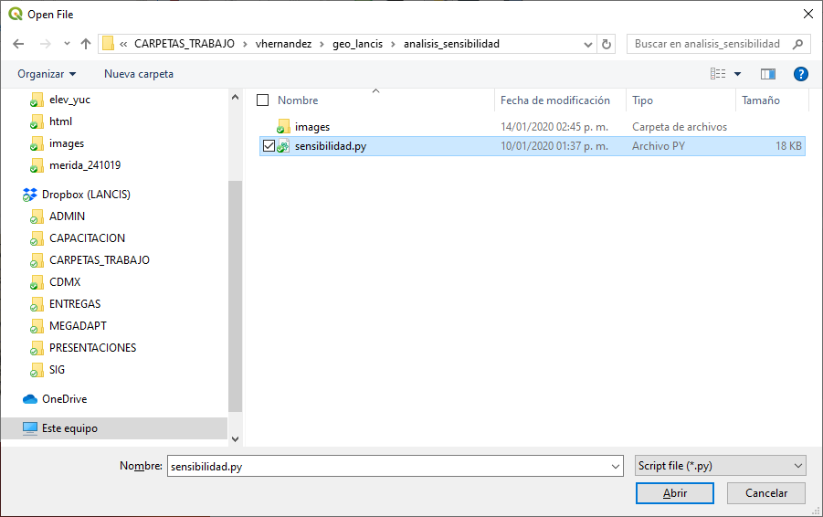

¿Cómo ejecutar un código en Qgis?¶
Paso #1¶
Ejecutar Qgis Desktop 3.XX, la ventana que se muestra es la que corresponde a la interfaz gráfica del programa, en la barra de tareas hacer clic en el ícono correspondiente a python para abrir la consola
paso #2¶
En la parte inferior de la ventana se mostrará la consola de python
paso #3¶
Hacer clic en el ícono de Editor
paso #4¶
Se despliega en el lado izquierdo un panel, el cual es el editor de código, cuenta con una barra de tareas, para abrir un script dar clic en el ícono de abrir archivo
paso #5¶
Se abrirá una ventana que te permite usar el explorador de archivos para navegar y encontrar el archivo .py, elegir el script deseado y dar clic en abrir.
